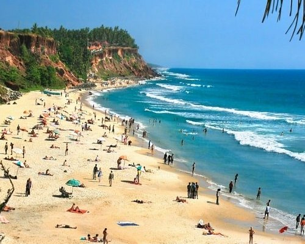
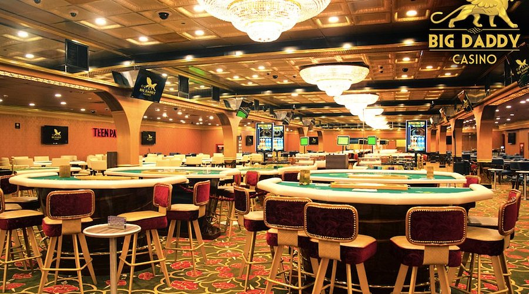

Beach featuring soft sands and gentle waves perfect for swimming and kayaking, complemented by a vibrant nightlife with live music and seafood dining. Enjoy serene boat rides through mangroves.

An adventurous bumpy Jeep ride leads you to these spectacular falls plunging into a pool where you can swim with giant carp.
Bhavnath is a locality in Junagadh city of Gujarat, India. It sits near the Girnar mountain range, close to Girnar Taleti, the place from where pilgrims have to ascend on foot to get to temples on Girnar hills.

Baga Beach, a popular tourist destination in North Goa, is known for its golden sands, lively atmosphere, and numerous beach shacks serving food and drinks, as well as its vibrant nightlife and water sports activities.
Benaulim Beach in South Goa is known for its long stretch of soft, white sand, calm waters, and a relatively peaceful atmosphere, making it a popular spot for sunbathing, swimming, and water sports like snorkeling and parasailing.


The Anjuna Flea Market, held every Wednesday in North Goa near Anjuna Beach, is a vibrant tourist bazaar known for its eclectic mix of goods, including handicrafts, souvenirs, clothing, and more, offering a unique shopping experience.

The Church of Our Lady of the Immaculate Conception, located in Panjim, Goa, is a prominent landmark known for its striking white façade and baroque architecture, built on a hill overlooking the city. It was originally a chapel built in 1541 and later rebuilt as a church in 1619.

Reis Magos Fort, a heritage site in Goa, was built by the Portuguese in 1551 and served as a strategic defense against the Maratha Empire, later serving as a prison and now a cultural center.
The Mangeshi Temple, dedicated to Lord Shiva as Mangesh, is a prominent Hindu temple located in Priol, Goa, known for its history, architecture, and connection to the Mangeshkar family, including the famed singer Lata Mangeshkar.
Tucked away in a forest, there are secrets to be revealed. An ancient city, a gateway to Rajasthan. A hiding place for rulers, concealed from enemies, citizens, angry wives, even from the sun, tucked between sacred hills on the east and west. And the mystery of abandonment, decay.
Fort Aguada is a 17th-century Portuguese fort looking out at the confluence of Mandovi River and the Arabian Sea. The crumbling ramparts of the fort stand on the Sinquerim Beach, approximately 18 km from Panjim.